Nginx [TOC]
一、Nginx的编译安装 1.1、官方源码包下载地址： https://nginx.org/en/download.html
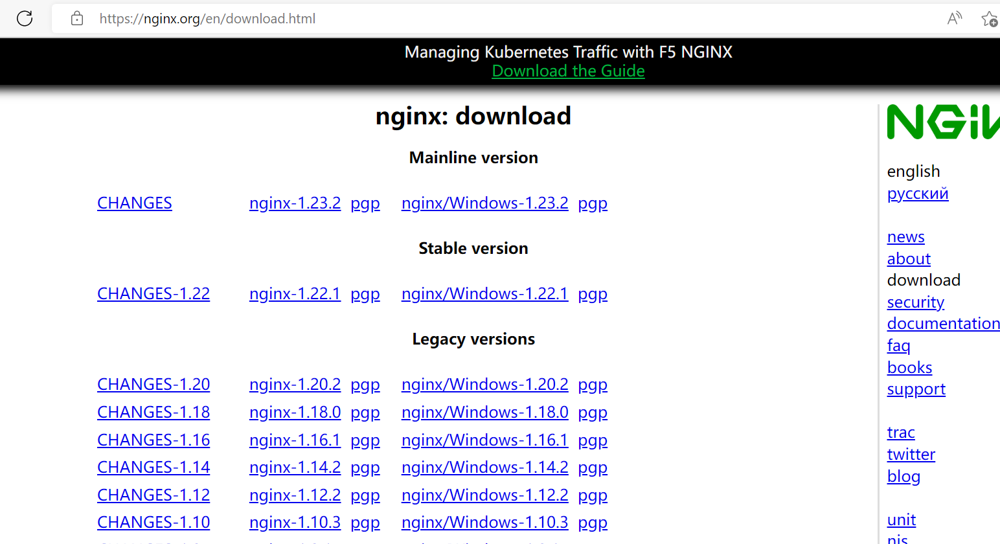
1.2、编译安装 1 2 3 4 5 6 7 8 9 10 11 12 13 14 15 16 17 18 19 20 21 22 23 24 25 26 27 28 29 30 31 32 33 34 35 36 37 38 39 40 41 42 43 44 45 46 47 48 49 50 51 52 53 54 55 56 57 58 59 60 61 62 63 64 65 66 67 68 69 70 71 72 73 74 75 76 77 78 79 80 81 82 [root@Rocky ~]
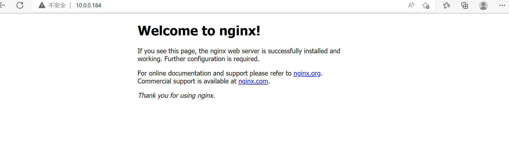
1.3、设置启动方式 1 2 3 4 5 6 7 8 9 10 11 12 13 14 15 16 17 18 19 20 21 22 23 24 25 26 27 28 29 30 31 32 33 34 35 $MAINPID $MAINPID
二、Nginx的平滑升级 2.1、平滑升级的流程 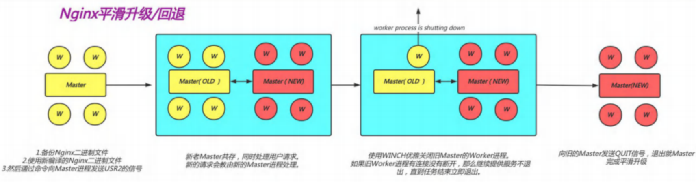
①将旧Nginx二进制文件换成新Nginx程序文件（注意先备份)
②向master进程发送USR2信号启动新nginx进程
③master进程修改pid文件名加上后缀.oldbin,成为nginx.pid.oldbin
④master进程用新Nginx文件启动新master进程及worker子进程成为旧master的子进程,系统中将有新旧两个Nginx主进程和对应的worker子进程并存
当前新的请求仍然由旧Nginx的worker进程进行处理,将新生成的master进程的PID存放至新生成的pid文件nginx.pid
⑤向旧的Nginx服务进程发送WINCH信号，使旧的Nginx worker进程平滑停止
⑥向旧master进程发送QUIT信号，关闭旧master，并删除Nginx.pid.oldbin文件
⑦如果发现升级有问题,可以回滚∶向旧master发送HUP，向新master发送QUIT
2.2、将旧Nginx二进制文件换成新Nginx程序文件 1 2 3 4 5 6 7 8 9 10 11 12 13 14 15 16 17 18 19 20 21 22 23 24 25 26 27 28 29 30 31 32 33 34 35 36 37 38 39 40 41 42 43 44 45 46 47 48 49 50 51 52 53 54 cp : overwrite '/apps/nginx/sbin/nginx' ? ytest is successful
2.3、向master进程发送USR2信号启动新nginx进程 1 2 3 4 5 6 7 8 9 10 11 12 13 14 15 16 17 18 19 20 21 22 23 24 25 26 27 28
2.4、向旧的Nginx服务进程发送WINCH信号，使旧的Nginx worker进程平滑停止 1 2 3 4 5 6 7 8 9 10 11 12 13 14
2.5、此时新旧共存，测试一段时间新版本是否正常运行 2.5.1、正常运行 1 2 3 4 [root@Rocky nginx-1.23.2]
2.5.2、不能正常运行 1 2 3 4 5 6 7 8 9 10 11
三、多虚拟主机 基于不同的IP、不同的端口以及不用得域名实现不同的虚拟主机，依赖于核心模块
ngx_http_core_module实现。
3.1、新建一个PC web站点 1 2 3 4 5 6 7 8 9 10 11 12 13 14 15 16 17 18 19 20 21 22 23 24 25 26 27 28 29 30 31 32 33 34 35 36 37 38 39 40 41 42 43 44 45 46 47 48 49 50 [root@Rocky ~]$TTL 1D
3.2、新建一个Mobile web站点 1 2 3 4 5 6 7 8 9 10 11 12 13 14 15 16 17 18 19 20 21 22 23 24 25 26 27 28 29 30 31 32 33 34 35 36 37 38 39 40 [root@Rocky ~]$TTL 1D
3.3、还可以在pc站点下再新建一个子目录 3.3.1、在/data/nginx/html/pc新建about 1 2 3 4 5 [root@Rocky ~]
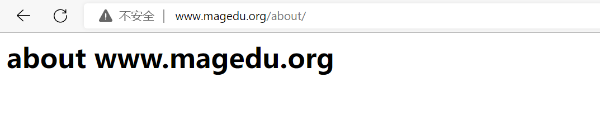
3.3.2、在新的目录下创建about 1 2 3 4 5 6 7 8 9 10 11 12 13 14 15 [root@Rocky ~]alias /opt/pc/about;
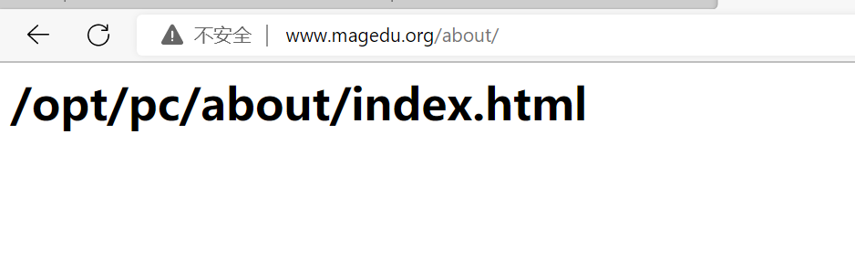
四、区分不同网站的访问日志，及设置日志的类型 4.1、自定义日志类型 1 2 3 4 5 6 7 8 9 10 11 12 13 14 15 16 17 18 19 20 21 22 23 24 25 26 27 28 29 30 31 32 33 34 35 36 37 38 39 40 [root@Rocky ~]'$remote_addr [$time_local] "$request" "$http_referer" $status ' ;alias /opt/pc/about;test is successful
4.2、把日志格式设置成json格式 1 2 3 4 5 6 7 8 9 10 11 12 13 14 15 16 17 18 19 20 21 22 23 24 25 26 27 28 29 30 31 32 33 34 35 36 37 38 39 40 41 42 43 44 45 46 47 48 49 50 51 52 53 54 55 56 57 58 59 [root@Rocky logs]'{"@timestamp":"$time_iso8601",' '"host":"$server_addr",' '"clientip":"$remote_addr",' '"size":$body_bytes_sent,' '"responsetime":$request_time,' '"upstreamtime":"$upstream_response_time",' '"upstreamhost":"$upstream_addr",' '"http_host":"$host",' '"uri":"$uri",' '"xff":"$http_x_forwarded_for",' '"referer":"$http_referer",' '"tcp_xff":"$proxy_protocol_addr",' '"http_user_agent":"$http_user_agent",' '"status":"$status"}' ;alias /opt/pc/about;test is successful"@timestamp" :"2022-11-28T13:28:46+08:00" ,"host" :"10.0.0.184" ,"clientip" :"10.0.0.185" ,"size" :26,"responsetime" :0.000,"upstreamtime" :"-" ,"upstreamhost" :"-" ,"http_host" :"www.magedu.org" ,"uri" :"/index.html" ,"xff" :"-" ,"referer" :"-" ,"tcp_xff" :"-" ,"http_user_agent" :"curl/7.61.1" ,"status" :"200" }"@timestamp" : "2022-11-28T13:28:46+08:00" ,"host" : "10.0.0.184" ,"clientip" : "10.0.0.185" ,"size" : 26,"responsetime" : 0.000,"upstreamtime" : "-" ,"upstreamhost" : "-" ,"http_host" : "www.magedu.org" ,"uri" : "/index.html" ,"xff" : "-" ,"referer" : "-" ,"tcp_xff" : "-" ,"http_user_agent" : "curl/7.61.1" ,"status" : "200"
五、开启流量监控 5.1、开启Nginx的状态页 基于nginx 模块 ngx_http_stub_status_module 实现，在编译安装nginx的时候需要添加编译参数 –with-http_stub_status_module，否则配置完成之后监测会是提示语法错误
注意 : 状态页显示的是整个服务器的状态,而非虚拟主机的状态
1 2 3 4 5 6 7 8 9 10 11 12 13 14 15 16 17 18 19 20 21 22 23 24 25 26 27 28 29 30 31 32 33 34 35 test is successful
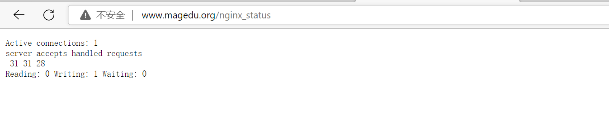
5.2、开启Nginx账户认证功能 由 ngx_http_auth_basic_module 模块提供此功能，此模块为默认模块
另外设置账号密码，借助于apache的工具
1 2 3 4 5 6 7 8 9 10 11 12 13 14 15 16 17 18 19 20 21 22 23 24 25 26 27 28 29 30 31 32 33 34 35 36 37 38 39 40 41 42 43 44 45 46 47 48 49 50 51 52 53 54 55 56 57 58 59 60 61 62 63 64 't update file; display results on stdout. -b Use the password from the command line rather than prompting for it. [root@Rocky ~]#htpasswd -bc /apps/nginx/conf.d/.nginx-user zhang 123456 Adding password for user zhang # 存放路径 账号 密码 [root@Rocky ~]#cat /apps/nginx/conf.d/.nginx-user zhang:$apr1$xstp1TOk$IRjBaDIckZXRt3hVdQgBW0 #创建第二个账号时，命令为htpasswd -b /apps/nginx/conf.d/.nginx-user 账号 密码。如果+c是替换旧账号，不+c是增加新账号 #进行安全加固 [root@Rocky ~]#chown nginx.nginx /apps/nginx/conf.d/.nginx-user [root@Rocky ~]#chmod 600 /apps/nginx/conf.d/.nginx-user [root@Rocky ~]#vim /apps/nginx/conf.d/pc.conf location /nginx_status { stub_status; auth_basic "waring"; #waring只是提示词，可以随意写 auth_basic_user_file /apps/nginx/conf.d/.nginx-user; } :wq #注意auth_basic和auth_basic_user_file可以放在http（所有网站）、server（其中一个网站）、location（网站中的1个页面） [root@Rocky ~]#nginx -t nginx: the configuration file /apps/nginx/conf/nginx.conf syntax is ok nginx: configuration file /apps/nginx/conf/nginx.conf test is successful [root@Rocky ~]#nginx -s reload
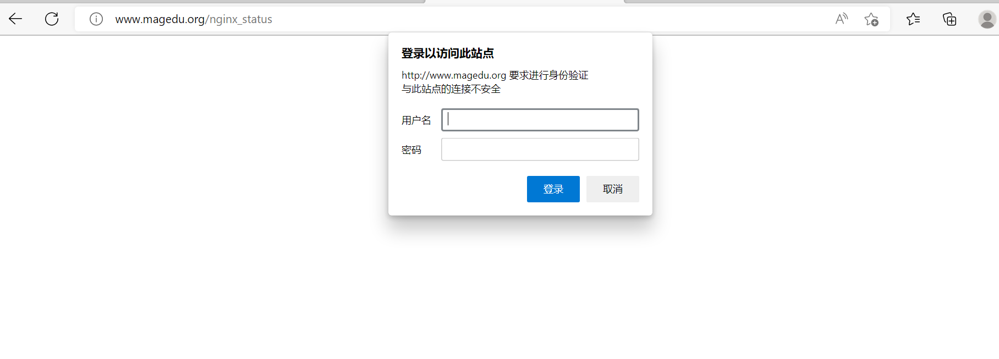
5.3、Nginx 四层访问控制 访问控制基于模块ngx_http_access_module（默认模块）实现，可以通过匹配客户端源IP地址进行限制
注意 : 如果能在防火墙设备控制,最好就不要在nginx上配置,可以更好的节约资源
官方帮助:
1 http://nginx.org/en/docs/http/ngx_http_access_module.html
1 2 3 4 5 6 7 8 9 10 11 12 13 14 15 16 17 18 19 20 21 22 23 24 25 26 27 28 29 30 [root@Rocky ~]"waring" ;test is successfulhead ><title>403 Forbidden</title></head>
六、安装第三方echo模块实现信息显示 开源的echo模块可以用来打印信息,变量等
1 https://github.com/openresty/echo-nginx-module
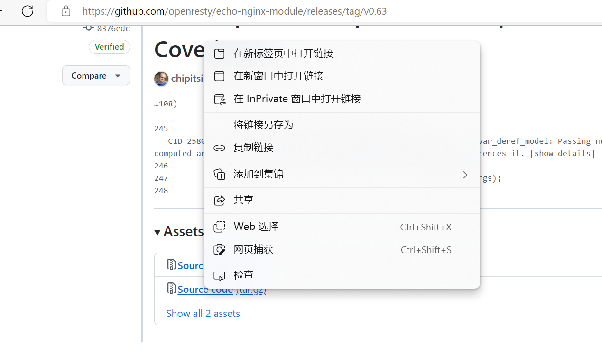
6.1、安装echo模块 1 2 3 4 5 6 7 8 9 10 11 [root@Rocky ~]
6.2、设置配置文件 Nginx里的变量
1 http://nginx.org/en/docs/varindex.html
1 2 3 4 5 6 7 8 9 10 11 12 13 14 15 16 17 18 19 [root@Rocky ~]set $class n68; echo $class ; echo "hello" ; echo $remote_addr ; echo $uri ; test is successful
七、nginx的反向代理 1 2 3 4 5 6 7 8 9 10 11 12 13 14 15 16 17 18 19 20 21 22 23 24 环境配置：test is successful"GET / HTTP/1.0" 200 607 "-" "curl/7.61.1"
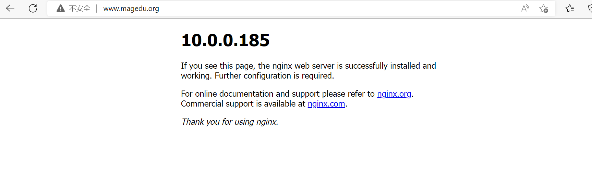
八、nginx的负载均衡 Nginx 可以基于ngx_http_upstream_module模块提供服务器分组转发、权重分配、状态监测、调度算法等高级功能
1 https://nginx.org/en/docs/http/ngx_http_upstream_module.html
8.1、http upstream配置参数 1 2 3 4 5 6 7 8 9 10 11 12 13 14 15 16 17 18 19 20 21 22 23 24 25 26
8.2、负载均衡参数设置 1 2 3 4 5 6 7 8 9 10 11 12 13 14 15 16 17 18 19 20 21 [root@proxy ~]test is successful
九、实现nginx四层负载均衡 Nginx在1.9.0版本开始支持tcp模式的负载均衡，在1.9.13版本开始支持udp协议的负载，udp主要用于DNS的域名解析，其配置方式和指令和http 代理类似，其基于ngx_stream_proxy_module模块实现tcp负载，另外基于模块ngx_stream_upstream_module实现后端服务器分组转发、权重分配、状态监测、调度算法等高级功能。
如果编译安装,需要指定 –with-stream 选项才能支持ngx_stream_proxy_module模块
1 2 3 官方文档：
9.1、tcp负载均衡配置参数 1 2 3 4 5 6 7 8 9 10 11 12 13 14 15 16 17 18 19 20 21 22 23 24 25 26 27 28 hash $remote_addr consistent;
9.2、实现负载均衡（redis和mysql类似） 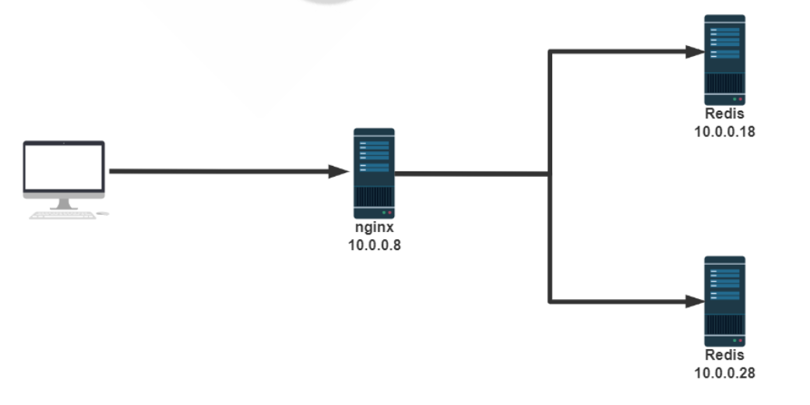
9.2.1、后端服务器安装redis 1 2 3 4 5 6
9.2.2、反向代理nginx配置 1 2 3 4 5 6 7 8 9 10 11 12 13 14 15 16 17 18 19 20 21 22 23 24 25 26 27 28 [root@centos8 ~]"wang"
十、实现FastCGI（异构代理） 前面的代理都属于同构代理
nginx缺通过与第三方基于协议实现，即通过某种特定协议将客户端请求转发给第三方服务处理，第三方服务器会新建新的进程处理用户的请求，处理完成后返回数据给Nginx并回收进程 ，最后nginx在返回给客户端，那这个约定就是通用网关接口(common gateway interface，简称CGI)，CGI（协议） 是web服务器和外部应用程序之间的接口标准，是cgi程序和web服务器之间传递信息的标准化接口。
Nginx基于模块ngx_http_fastcgi_module实现通过fastcgi协议将指定的客户端请求转发至php-fpm处
理，其配置指令如下
1 2 3 4 5 6 7 8 9 10 11 12 13 14 15 16 17 18 19 20 21 22 23 24 25 26 27 28 fastcgi_pass address;$remote_addr ; $remote_port ; $server_addr ; $server_port ; $server_name ; $fastcgi_script_name ;
10.1、 FastCGI实战案例: Nginx与php不在同一个服务器 nginx会处理静态请求，但是会转发动态请求到后端指定的php-fpm服务器，因此php代码需要放在后端
的php-fpm服务器，即静态页面放在Nginx服务器上,而动态页面放在后端php-fpm服务器，通常情况
下，一般都是采用在同一个服务器
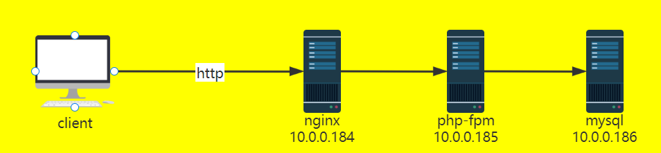
10.1.1、php-fpm的配置文件 1 2 3 4 5 6 7 8 9 10 11 12 13 14 15 16 17 18 19 20 21 22 23 24 25 26 27 28 29 30 31 32 33 34 35 36 37 38 39 40 41 42 43 44 45 46 47 48 49 50 51 52 53 54 55 56 57 58 59 60 61 62 63 64 65 66 67 68 69 70 71 72 73 74 75 76 77 78 79 80 81 82 83 84 [root@php-fpm ~]in log dir .
10.1.2、反向代理nginx的配置 1 2 3 4 5 6 7 8 9 10 11 12 13 14 15 16 17 18 19 20 21 22 [root@proxy conf.d]$fastcgi_script_name ; test is successful
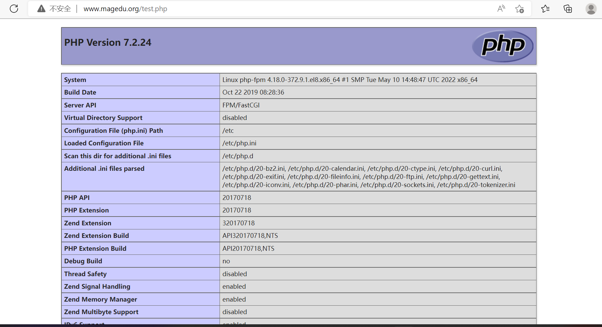
10.1.3、php-fpm也可以开启状态页和ping 1 2 3 4 5 6 7 8 9 10 11 12 13 14 15 16 17 18 19 20 21 22 [root@php-fpm php]set set $fastcgi_script_name ;
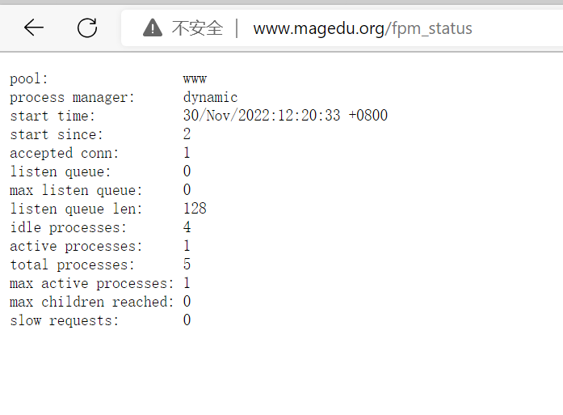
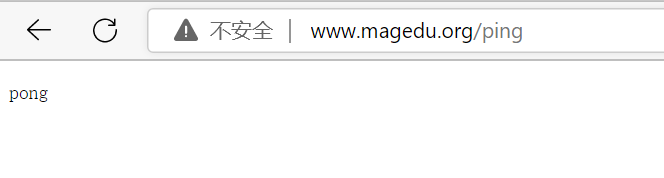
十一、项目实战:利用LNMP实现WordPress站点搭建 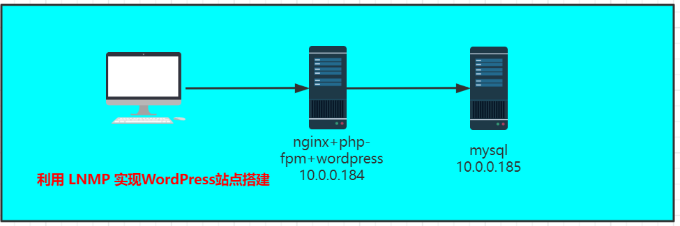
10.1、LNP的配置 1 2 3 4 5 6 7 8 9 10 11 12 13 14 15 16 17 18 19 20 21 22 23 24 25 26 27 28 29 30 31 32 33 34 35 36 37 38 39 40 41 42 43 44 45 46 47 48 49 50 51 52 53 54 55 56 57 58 59 60 61 62 63 64 65 66 67 68 69 70 71 72 73 74 75 76 77 78 79 80 81 82 83 84 85 86 87 88 89 90 91 in log dir .set set $fastcgi_script_name ;$fastcgi_script_name ;test is successful
10.2、数据库mysql的配置 1 2 3 4 5 6 7 8 9 10 11 12 13 [root@Rocky ~]'10.0.0.%' identified by '123456' ;'10.0.0.%' ;
十二、